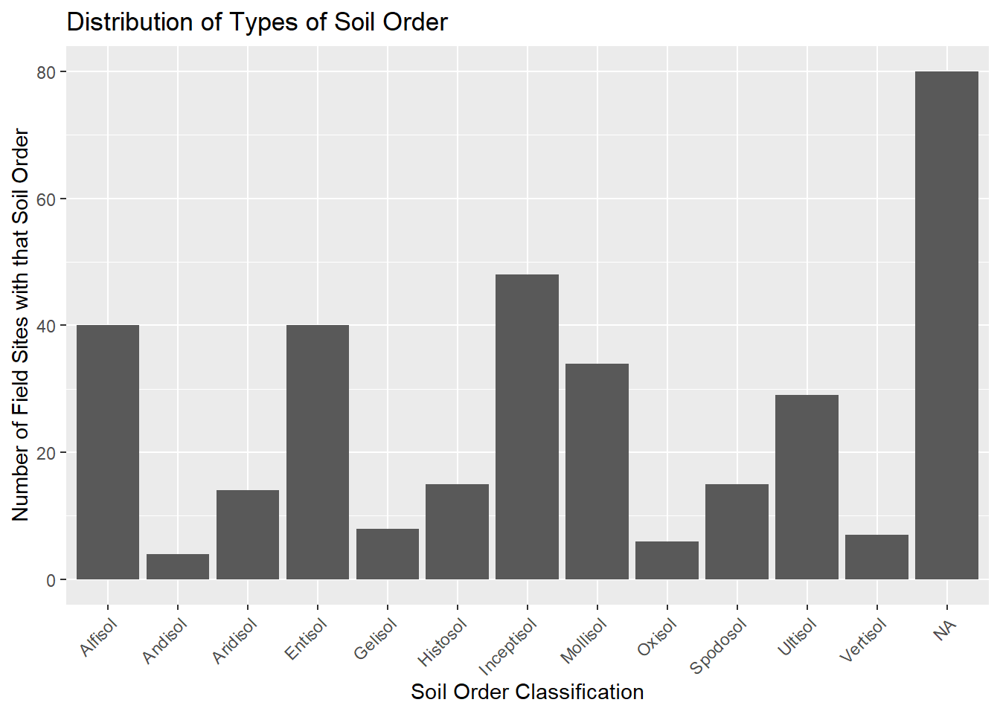

ClementiPrj1DataExploration
Johnathan Clementi
4/21/2020
Library load
library(tidyverse) #loads ggplot and the others
library(readxl)#for reading in excel files
library(lubridate)Read data - fill blanks with NA
czenSites <- read.csv('C:/Users/Johnathan/Google Drive/Grad School/Juniata_DataScience/DS500/Project1/data/longtermMonitoringSites.csv', na.strings = c("", "NA"))Metadata:
Origin - CZEN (Critical Zone Exloration Network) / CZO (Critical Zone Observatory) Site Seeker website: https://www.czen.org/site_seeker
Date of Creation - Data exported from czen site seeker on July 25, 2018.
About these data: This dataset contains data about research sites that have been registered to the Critical Zone Exploration Network’s website. The original goal of collecting these data was to create a database of long-term research sites and the areas of research they specialize in. One question that the data curators were interested in was whether certain areas were poorly represented. As there are nuances to every research station, data collected are generalized for each research site, some representing more than one attribute of the variables (i.e. a research site can have multiple Network affiliations).
List of Variables: 1. Field Site - (Categorical) - Name given to field site 2. Latitude - (Quantitative) - Latitude of field site 3. Longitude - (Quantitative) - Longitude of field site 4. Field Site type - (Categorical) - Affiliation of field site with US or international based research groups 5. Registration - (Categorical) -Is the field site a registered member of CZEN 6. Mean Annual Precipitation - (Quantitative) - Average precipitation in millimiters per year 7. Average Annual Temperature - (Quantitative) - Average temperature in degrees Centigrade 8. Geology - (Categorical) - Most common geology type present at field site 9. Land Cover - (Categorical) - Most common land cover type present at field site 10. Climate - (Categorical) - Most common climate type present at field site 11. Sub-Climate - (Categorical) - Second most common climate type present at field site 12. Network(s) - (Categorical) - Research networks the field site is affiliated with 13. Soil Order - (Categorical) - Most common soil type present at field site 14. Study Start Date - (Quantitative) - The year in which the field site was opened for research 15. Hydrology: Surface water stream order - (Categorical) - Stream order of primary surface water present at field site 16. Hydrology: Surface water - Stream Flow Performance - (Categorical) - Stream flow type of primary surface water present at field site 17. Hydrology: Groundwater - (Categorical) - Type of groundwater present at field site
Data Cleaning and Manipulation
Rename variable headings to exclude spaces
czenSites = czenSites %>%
rename(FieldSite = 'Field.Site', FieldSiteType = 'Field.Site.Type', MeanAnnualPrecip = 'Mean.Annual.Precipitation', AvgTemp = 'Average.Annual.Temperature', LandCover = 'Land.Cover', SubClimate = 'Sub.Climate', Networks = 'Network.s.', SoilOrder = 'Soil.Order', StudyStartDate = 'Study.Start.Date', SurfaceStreamOrder = 'Hydrology..Surface.water.stream.order', StreamFlowPerformance = 'Hydrology..Surface.water...Stream.Flow.Performance', Groundwater = 'Hydrology..Groundwater')
str(czenSites)## 'data.frame': 233 obs. of 17 variables:
## $ FieldSite : Factor w/ 233 levels "Abby Road","Abisko Research Station",..: 1 2 3 4 5 6 7 8 9 10 ...
## $ Latitude : num 45.8 68.3 43.8 47.9 -22.5 ...
## $ Longitude : num -122.33 18.82 -74.84 -4.15 133.34 ...
## $ FieldSiteType : Factor w/ 9 levels "Independent",..: 9 8 1 3 3 9 3 9 9 9 ...
## $ Registration : Factor w/ 2 levels "Registered","Unregistered": 2 2 1 2 2 1 1 2 2 2 ...
## $ MeanAnnualPrecip : Factor w/ 158 levels "100 millimeters / year",..: NA 89 17 15 88 32 118 66 119 86 ...
## $ AvgTemp : Factor w/ 36 levels "-12¡C","-2¡C",..: NA 9 30 11 24 29 26 35 23 NA ...
## $ Geology : Factor w/ 66 levels "carbonate","carbonate, igneous-felsic intrusive",..: NA 15 9 9 NA 25 NA 24 1 47 ...
## $ LandCover : Factor w/ 92 levels "Agriculture- Crops",..: 42 22 90 4 60 90 24 39 89 83 ...
## $ Climate : Factor w/ 5 levels "Boreal","Mediterranean",..: NA 3 4 4 NA 4 5 4 5 3 ...
## $ SubClimate : Factor w/ 9 levels "Arid","Dry","Humid",..: NA NA 7 3 NA 7 6 4 7 NA ...
## $ Networks : Factor w/ 58 levels "ARS","ARS, CUAHSI",..: 46 52 32 14 56 57 51 38 35 35 ...
## $ SoilOrder : Factor w/ 52 levels "Alfisol","Alfisol, Aridisol, Inceptisol, Mollisol",..: NA 34 49 51 51 51 NA 12 26 34 ...
## $ StudyStartDate : Factor w/ 92 levels "1907","1910",..: 92 4 74 NA 90 89 59 22 17 92 ...
## $ SurfaceStreamOrder : Factor w/ 12 levels "Fifth Order",..: NA NA 2 NA NA 2 4 10 NA NA ...
## $ StreamFlowPerformance: Factor w/ 7 levels "Ephemeral","Intermittent",..: NA 4 2 NA NA 4 3 4 NA NA ...
## $ Groundwater : Factor w/ 5 levels "Arrangment of Aquifer Components - Complexly interbedded sequence of aquifers and confining beds",..: NA NA NA 2 NA 2 2 NA 1 NA ...Fix misspelled values in FieldSiteType, Geology, & Landcover
czenSites = czenSites %>%
mutate(FieldSiteType = str_replace(FieldSiteType, "Interntaional", "International")) %>%
mutate(Geology = str_replace(Geology, "secimentary", "sedimentary")) %>%
mutate(LandCover = str_replace(LandCover, "Shurbland", "Shrubland"))Replace Unknown / None values with NA in Networks, SoilOrder, and SurfaceStreamOrder
czenSites = czenSites %>%
mutate(Networks = str_replace(Networks, "None", NA_character_)) %>%
mutate(SoilOrder = str_replace(SoilOrder, "Unknown", NA_character_)) %>%
mutate(SurfaceStreamOrder = str_replace(SurfaceStreamOrder, "Unknown", NA_character_)) Remove units from MeanAnnualPrecip, then convert to integer
czenSites = czenSites %>%
mutate(MeanAnnualPrecip = str_replace(MeanAnnualPrecip, "millimeters / year", "")) %>%
mutate(MeanAnnualPrecip = as.numeric(MeanAnnualPrecip))## Warning: NAs introduced by coercionRemove units from AvgTemp, then convert to integer & remove dubious value (73C = 163F & 34C = 93.2F) from AvgTemp
czenSites = czenSites %>%
mutate(AvgTemp = str_replace(AvgTemp, "¡C", "")) %>%
mutate(AvgTemp = str_replace(AvgTemp, "73", NA_character_)) %>%
mutate(AvgTemp = str_replace(AvgTemp, "34", NA_character_)) %>%
mutate(AvgTemp = as.numeric(AvgTemp))Remove date ranges for StudyStartDate and convert to integer
czenSites = czenSites %>%
separate(StudyStartDate, into = c("StudyStartDate", "StudyEndDate"), sep = " to ") %>%
mutate(StudyStartDate = date(sub("$", "-01-01", StudyStartDate))) %>%
mutate(StudyEndDate = date(sub("$", "-01-01", StudyEndDate)))## Warning: Expected 2 pieces. Missing pieces filled with `NA` in 215 rows [1, 2,
## 5, 6, 7, 8, 9, 10, 11, 12, 13, 14, 15, 16, 17, 18, 20, 21, 22, 23, ...].Remove redundant text from Groundwater values
czenSites = czenSites %>%
mutate(Groundwater = str_replace(Groundwater, "Arrangment of Aquifer Components - ", "")) %>%
mutate(Groundwater = str_replace(Groundwater, "Arrangment of Aquifer Components - ", ""))Simplify Groundwater Values
czenSites = czenSites %>%
mutate(Groundwater = str_replace(Groundwater, "Single, dominant unconfined aquifer", "Single unconfined aquifer")) %>%
mutate(Groundwater = str_replace(Groundwater, "Complexly interbedded sequence of aquifers and confining beds", "Combination of aquifers and confining beds")) %>%
mutate(Groundwater = str_replace(Groundwater, "Three unit system of an unconfined aquifer, confined aquifer and a confining bed", "Unconfined and confined aquifer and confining bed"))Split multivalue observations in variables for Geology, Landcover, SubClimate, Networks, SoilOrder, SurfaceStreamOrder, StreamFlowPerformance, Groundwater. Then select relevant variables.
- Note - These functions create new dataframes to preserve the count for only that variable (If I did these operations on the same dataframe, values would be counted more than once for observations that have multiple multi-part values.)
# Geology
czenSitesGeology = czenSites %>%
transform(Geology = strsplit(as.character(Geology), ",")) %>%
unnest(Geology) %>%
mutate(Geology = str_trim(Geology)) %>%
select(FieldSite, Latitude, Longitude, Geology)
# LandCover
czenSitesLandCover = czenSites %>%
transform(LandCover = strsplit(as.character(LandCover), ",")) %>%
unnest(LandCover) %>%
mutate(LandCover = str_trim(LandCover)) %>%
select(FieldSite, Latitude, Longitude, LandCover)
# SubClimate
czenSitesSubClimate = czenSites %>%
transform(SubClimate = strsplit(as.character(SubClimate), ",")) %>%
unnest(SubClimate) %>%
mutate(SubClimate = str_trim(SubClimate)) %>%
select(FieldSite, Latitude, Longitude, Climate, SubClimate)
# Networks
czenSitesNetworks = czenSites %>%
transform(Networks = strsplit(as.character(Networks), ",")) %>%
unnest(Networks) %>%
mutate(Networks = str_trim(Networks)) %>%
select(FieldSite, Latitude, Longitude, Networks)
# Soil Order
czenSitesSoilOrder = czenSites %>%
transform(SoilOrder = strsplit(as.character(SoilOrder), ",")) %>%
unnest(SoilOrder) %>%
mutate(SoilOrder = str_trim(SoilOrder)) %>%
select(FieldSite, Latitude, Longitude, SoilOrder)
# Surface Stream Order
czenSitesStreamOrder = czenSites %>%
transform(SurfaceStreamOrder = strsplit(as.character(SurfaceStreamOrder), ",")) %>%
unnest(SurfaceStreamOrder) %>%
mutate(SurfaceStreamOrder= str_trim(SurfaceStreamOrder)) %>%
select(FieldSite, Latitude, Longitude, SurfaceStreamOrder)
# Stream Performance
czenSitesStreamPerformance = czenSites %>%
transform(StreamFlowPerformance = strsplit(as.character(StreamFlowPerformance), ",")) %>%
unnest(StreamFlowPerformance) %>%
mutate(StreamFlowPerformance = str_trim(StreamFlowPerformance)) %>%
select(FieldSite, Latitude, Longitude, StreamFlowPerformance)
# Groundwater
czenSitesGroundwater = czenSites %>%
transform(Groundwater = strsplit(as.character(Groundwater), ",")) %>%
unnest(Groundwater) %>%
mutate(Groundwater = str_trim(Groundwater)) %>%
select(FieldSite, Latitude, Longitude, Groundwater)Implementing a function for the above code:
Ultimately, I could not get this to section to work. I was able to figure out that using the [] notation will replace $ when accessing the name of a variable from a dataframe. However, this notation will pass the data in the form of a vector. However, I think the trouble was coming from assigning this vector back to the data frame. It would throw an error saying that the arguments imply differing number of rows. Ultimately I chose to abandon this piece of the project because of time.
# Splitting multivalue observations function
multiSplit = function(newDF, existDF, varName){
newDF <- data.frame(existDF)
str(newDF[[varName]])
# newDF = newDF %>%
transform(newDF[[varName]] <- strsplit((newDF[[varName]]), ",")) #%>%
unnest(newDF[[varName]]) #%>%
mutate(newDF[[varName]] <- str_trim(newDF[[varName]])) #%>%
#select(FieldSite, Latitude, Longitude, varName)
assign(paste(newDF), data.frame(newDF), envir = .GlobalEnv)
}# Geology
multiSplit(newDF = "czenSitesGeology2", existDF = czenSites, varName = "Geology")Reorder Surface Stream Order factors
czenSitesStreamOrder = czenSitesStreamOrder %>%
mutate(SurfaceStreamOrder = factor(SurfaceStreamOrder, levels = c("First Order", "Second Order", "Third Order", "Fourth Order", "Fifth Order", "Sixth Order")))Variation within each Variable
Longitude:
Longitude is the ‘x’ value in a coordinate system used to locate points of interest on the Earth’s surface. Lines of Longitude run from North -> South, but measure East -> West. The Prime Meridian (0 longitude), runs through Greenwich, England. This figure is interesting because you can see that the majority of research sites are located in the US. Then there are not any research sites in the Atlantic Ocean, a few sites in Europe, not many in Africa.
ggplot(data = czenSites) +
geom_histogram(mapping = aes(x = Longitude)) +
labs(title = "Field Sites by Longitude", x = 'Longitude', y = "Number of Field Sites")## `stat_bin()` using `bins = 30`. Pick better value with `binwidth`.
Latitude:
Latitude is the ‘y’ value in a coordinate system used to locate points of interest on the Earth’s surface. Lines of Latitude run from East -> West, but measure North -> South. The Equator (0 latitude), runs through the country of Equador. This figure is interesting because you can observe that most of the research sites are located in the Northern Hemisphere.
ggplot(data = czenSites) +
geom_histogram(mapping = aes(x = Latitude)) +
coord_flip() +
labs(title = "Field Sites by Latitude", x = 'Latitude', y = "Number of Field Sites")## `stat_bin()` using `bins = 30`. Pick better value with `binwidth`.Type of Field Site:
Traditionally, the US has been a leader in long-term ecological research. This is evident in the number of US-Affiliated research sites, as illustrated by this figure.
ggplot(data = czenSites) +
geom_bar(mapping = aes(x = factor(1), fill = FieldSiteType), width = 1) +
coord_polar("y") +
scale_fill_brewer(palette = "Paired") +
theme(axis.text.x = element_blank())Mean Annual Precip:
One of the goals of this study is to identify ecosystems which lack representation in long-term research studies. In this case, it appears that there may be a lack of long-term research that focuses on areas that would be classified as rainforests (precipitation > 2500 mm/year)
ggplot(data = czenSites) +
geom_histogram(mapping = aes(x = MeanAnnualPrecip)) +
labs(title = "Distribution of Average Precipiation at Field Sites", x = "Mean Annual Precip (mm/year)", y = "Number of Field Sites in Precip Range")## `stat_bin()` using `bins = 30`. Pick better value with `binwidth`.## Warning: Removed 30 rows containing non-finite values (stat_bin).summary(czenSites$MeanAnnualPrecip)## Min. 1st Qu. Median Mean 3rd Qu. Max. NA's
## 50 598 903 1051 1350 5143 30Average Temperature
ggplot(data = czenSites) +
geom_histogram(mapping = aes(x = AvgTemp)) +
labs(title = "Distribution of Average Temperature at Field Sites", x = "Average Temperature (Degrees Celcius)", y = "Number of Field Sites in Temperature Range")## `stat_bin()` using `bins = 30`. Pick better value with `binwidth`.## Warning: Removed 63 rows containing non-finite values (stat_bin).summary(czenSites$AvgTemp)## Min. 1st Qu. Median Mean 3rd Qu. Max. NA's
## -22 7 12 12 17 27 63Geology:
Most geologic types (types of rocks) are represented in the global long-term reserach sites with the exception of igneaous-ultramafic intrusive/extrusive, and igneous-felsic extrusive. These geologic types may be rare, and possibly only exist on small islands or areas that are not conducive to the current long-term research model.
ggplot(data = czenSitesGeology) +
geom_bar(mapping = aes(x = Geology)) +
# coord_flip() +
labs(title = "Distribution of Types of Geology", y = "Number of Field Sites with that geology", x = "Geologic Classification") +
theme(axis.text.x = element_text(angle = 45, hjust = 1))czenSitesGeology %>% group_by(Geology) %>% count(Geology)Landcover:
Focusing on less represented research locations, this figure highlights that highly developed areas (cities) are not well represented in research sites as Evergreen forests are. This is consistent with a trend I have observed in ecology, in that scientists are interested in researching relatively unmodified ecosystems. However, there has been a push lately to begin researching urban ecologic systems. For instance, Baltimore has a well known long-term research site.
ggplot(data = czenSitesLandCover) +
geom_bar(mapping = aes(x = LandCover)) +
# coord_flip() +
labs(title = "Distribution of Types of Land Cover", y = "Number of Field Sites with that type of land cover", x = "Land cover Classification") +
theme(axis.text.x = element_text(angle = 45, hjust = 1))czenSitesLandCover %>% group_by(LandCover) %>% count(LandCover)Climate:
Polar and Boreal climates are the least represented across the research sites. This is most likely because these environments are more harsh and less conducive to human living. There are more resources needed to live and conduct research in these locations.
ggplot(data = czenSites) +
geom_bar(mapping = aes(x = Climate)) +
# coord_flip()+
labs(title = "Distribution of Types of Climate", y = "Number of Field Sites with that climate", x = "Climate type") +
theme(axis.text.x = element_text(angle = 45, hjust = 1))czenSites %>% group_by(Climate) %>% count(Climate)## Warning: Factor `Climate` contains implicit NA, consider using
## `forcats::fct_explicit_na`
## Warning: Factor `Climate` contains implicit NA, consider using
## `forcats::fct_explicit_na`
## Warning: Factor `Climate` contains implicit NA, consider using
## `forcats::fct_explicit_na`
## Warning: Factor `Climate` contains implicit NA, consider using
## `forcats::fct_explicit_na`Sub Climate:
These results are supportive of those found in the Mean Annual Precipitation figure. Most research sites are in areas that have temperate environments that are not on the extreme ends of humidity. Deserts and rainforests are two areas that are not well represented in long-term research.
ggplot(data = czenSitesSubClimate) +
geom_bar(mapping = aes(x = SubClimate)) +
# coord_flip() +
labs(title = "Distribution of Types of Sub Climates", y = "Number of Field Sites with that sub climate", x = "Sub climate Classification") +
theme(axis.text.x = element_text(angle = 45, hjust = 1))czenSitesSubClimate %>% group_by(SubClimate) %>% count(SubClimate)Networks:
A network is essentially an organization of scientists involved in the same type of research. For instance, the USFS network is comprised of US Forest Service members that study forestry in the US. NEON stands for National Ecologic Observation Network and houses scientists that focus ecologic systems rather than geologic systems (CZO).
ggplot(data = czenSitesNetworks) +
geom_bar(mapping = aes(x = Networks)) +
# coord_flip() +
labs(title = "Distribution of Research Networks", y = "Number of Field Sites belonging to that network", x = " Research Network") +
theme(axis.text.x = element_text(angle = 45, hjust = 1))czenSitesNetworks %>% group_by(Networks) %>% count(Networks)Soil Order:
Oxisol and Andisols are the least representative soil orders found at the research sites. This is supportive of our earlier conclusisions - According to the USDA, oxisols are found in tropical and subtropical enviroments and are not naturally fertile. Additionally, according to the USDA, andisols are compartively rare and only make up about 1% of the World’s surface. (USDA, https://www.nrcs.usda.gov/wps/portal/nrcs/detail/soils/edu/?cid=nrcs142p2_053588).
ggplot(data = czenSitesSoilOrder) +
geom_bar(mapping = aes(x = SoilOrder)) +
# coord_flip() +
labs(title = "Distribution of Types of Soil Order", y = "Number of Field Sites with that Soil Order", x = "Soil Order Classification") +
theme(axis.text.x = element_text(angle = 45, hjust = 1))
czenSitesSoilOrder %>% group_by(SoilOrder) %>% count(SoilOrder)Study Start Date:
Most long-term research has begun since the major environmental legislation was passed by the Nixon administration. With increases in access to information and focus on how anthropogenic climate change is affecting the Earth’s environmental systems, scientists are becoming more focused on tracking the changes of these systems over longer stretches of time.
ggplot(data = czenSites) +
geom_histogram(mapping = aes(x = StudyStartDate)) +
# coord_flip() +
theme(axis.text.x = element_text(angle = 45, hjust = 1))## `stat_bin()` using `bins = 30`. Pick better value with `binwidth`.## Warning: Removed 6 rows containing non-finite values (stat_bin).summary(czenSites$StudyStartDate)## Min. 1st Qu. Median Mean 3rd Qu. Max.
## "1907-01-01" "1965-01-01" "1996-01-01" "1985-11-05" "2013-07-02" "2018-01-01"
## NA's
## "6"Stream Order
Stream order is a measurment of how many tributaries flow into a stream or river. First order streams are streams who’s primary source of water is from the landscape and/or a spring. When first order streams combine, they produce second order streams. Therefore, this figure is logical in that it shows an abundance of first, second, and third order streams, and less fourth, fifth, and sixth order streams.
ggplot(data = czenSitesStreamOrder) +
geom_bar(mapping = aes(x = SurfaceStreamOrder)) +
# coord_flip() +
labs(title = "Distribution of Surface Stream Orders", y = "Number of Field Sites with that type of stream", x = "Stream Order Classification") +
theme(axis.text.x = element_text(angle = 45, hjust = 1))czenSitesStreamOrder %>% group_by(SurfaceStreamOrder) %>% count(SurfaceStreamOrder)## Warning: Factor `SurfaceStreamOrder` contains implicit NA, consider using
## `forcats::fct_explicit_na`
## Warning: Factor `SurfaceStreamOrder` contains implicit NA, consider using
## `forcats::fct_explicit_na`
## Warning: Factor `SurfaceStreamOrder` contains implicit NA, consider using
## `forcats::fct_explicit_na`
## Warning: Factor `SurfaceStreamOrder` contains implicit NA, consider using
## `forcats::fct_explicit_na`Stream Flow Performance
Most streams that are studied or present at research sites are perennial streams.
ggplot(data = czenSitesStreamPerformance) +
geom_bar(mapping = aes(x = StreamFlowPerformance)) +
# coord_flip() +
labs(title = "Distribution of Stream Performance", y = "Number of Field Sites with that type of stream", x = "Stream Performance Classification") +
theme(axis.text.x = element_text(angle = 45, hjust = 1))czenSitesStreamPerformance %>% group_by(StreamFlowPerformance) %>% count(StreamFlowPerformance)Ground water
It appears as though most of the research sites are not focused on measuring groundwater (geologic focus).
ggplot(data = czenSitesGroundwater) +
geom_bar(mapping = aes(x = Groundwater)) +
coord_flip() +
labs(title = "Distribution of types of Groundwater", y = "Number of Field Sites with that type of groundwater", x = "Groundwater Classification") #theme(axis.text.x = element_text(angle = 90, hjust = 1))
czenSitesGroundwater %>% group_by(Groundwater) %>% count(Groundwater)Covariation
Latitude x Longitude - a crude map of where research sites are. Using Gestalt, rely on your mind to visualize the continents - the US is pretty ‘easy’ to see.
ggplot(data = czenSites) +
geom_point(mapping = aes(x = Longitude, y = Latitude), na.rm = TRUE)Latitude x Mean Annual Precip & Latitude x AvgTemp (Quantitative x Quantitative)
The most interesting figure to me is the Temperature across Latitude. You can see the decrease in average temperature as latitude diverges from the Equator.
ggplot(data = czenSites) +
geom_point(aes(x = Latitude, y = MeanAnnualPrecip), na.rm = TRUE) +
labs(title = "Distribution of Annual Precip Across Latitude", x = "Latitude", y = "Mean Annual Precipitation (mm/yr)")ggplot(data = czenSites) +
geom_point(aes(x = Latitude, y = AvgTemp), na.rm = TRUE) +
labs(title = "Distribution of Average Temperature Across Latitude", x = "Latitude", y = "Average Temperature (C)")Adding models to Latitude x Mean Annual Precip & Latitude x AvgTemp figures
I am a bit confused with how the polynomial model has that little bump right around 40 degrees of latitude. Otherwise, the model seems to fit the data well.
ggplot(data = czenSites) +
geom_point(aes(x = Latitude, y = MeanAnnualPrecip), na.rm = TRUE) +
geom_smooth(aes(x = Latitude, y = MeanAnnualPrecip), na.rm = TRUE, method = "lm", se = 0) +
labs(title = "Distribution of Annual Precip Across Latitude", x = "Latitude", y = "Mean Annual Precipitation (mm/yr)") ggplot(data = czenSites) +
geom_point(aes(x = Latitude, y = AvgTemp), na.rm = TRUE) +
geom_smooth(aes(x = Latitude, y = AvgTemp), na.rm = TRUE, method = "loess", se = 0) +
labs(title = "Distribution of Average Temperature Across Latitude", x = "Latitude", y = "Average Temperature (C)")Longitude x Precip & Longitude x Avg Temp (Quantitative x Quantitative)
ggplot(data = czenSites) +
geom_point(aes(x = Longitude, y = MeanAnnualPrecip), na.rm = TRUE) +
labs(title = "Distribution of Annual Precip Across Longitude", x = "Longitude", y = "Mean Annual Precipitation (mm/yr)")ggplot(data = czenSites) +
geom_point(aes(x = Longitude, y = AvgTemp), na.rm = TRUE)+
labs(title = "Distribution of Average Temperature Across Longitude", x = "Longitude", y = "Average Temperature (C)")Climate x Sub Climate (Categorical x Categorical)
This figure supports the claim that temperate climates are well represented, whereas polar and boreal climates are not.
ggplot(data = czenSitesSubClimate) +
geom_count(aes(x = Climate, y = SubClimate)) +
labs(title = "Relationship between Climate and Sub Climate", y = "Sub Climate", x = "Climate")Climate x AvgTemp and Climate x MeanAnnualPrecip (Categorical x Quantitative)
ggplot(data = czenSites) +
geom_col(aes(x = Climate, y = AvgTemp), na.rm = TRUE) +
labs(title = "Average Temperature as a function of Climate", x = "Climate", y = "Average Temperature (C)")## Warning: Removed 63 rows containing missing values (position_stack).ggplot(data = czenSites) +
geom_col(aes(x = Climate, y = MeanAnnualPrecip), na.rm = TRUE) +
labs(title = "Mean Annual Precip as a function of Climate", x = "Climate", y = "Mean Annual Precip (mm/yr)")## Warning: Removed 30 rows containing missing values (position_stack).
Part 2
Week 10 - Tidy Data & Functions I had worked to tidy these data in the first iteration of the this project. These efforts mainly consisted of dealing with the multi-valued entries found in 8 of the 17 variables. Ultimately I found that the best method for dealing with the multi-valued entries was to create a new dataframe for each variable, and split the multi-valued entries into component pieces, each with their own row. This way I could capture every feature each research site represented, which maintaining the integrity of the data. As explained above, I tried to implement these cleaning methods as one function that would handle all of the varaibles, but was unsuccessful in these efforts. Ideally, the function would be called 8 times, and create 8 new dataframes.
Week 11 - Modeling I could not think of much to model other than the latitude x avg temp and latitude x mean annual precip data. The models seemed to fit the data in the latitude x avg temp but latitude is not a good predictor of mean annual precip.
Week 12 - Factors and Dates I applied the lesson from week 12 in two locations in my workflow. The first was the Start date (and End date for some) of research at each research location. Originally, I had parsed out just the Start date and casted the data to an integer. To make use of the date type, I split the start and end dates, then because I only had the year, I added -01-01 to use Jan 1 as a place holder, then converted the data to a date format. The other location which needed adjustment was the ordering of factors in the Surface Stream Order variable. To fix this, I simply used mutate and factor to reorder the factor levels.
Reflections from part 1:
The method of data exploration that I chose to pursue was that of fixing known issues right away (I knew I would need to remove the units from AvgTemp and MeanAnnualPrecip). Then I created rough figures for each variable and identified issues that needed to be resolved. These included misspellings of data values (secimentary instead of sedimentary, or interntaional instead of international). I then needed to figure out what to do with the variables that had multiple values for some observations. Based on some internet searching, the best course of action I found was to use the tidyr function ‘unnest’ to split the multivalues at the commas that separated them. What this did was create a new observation for each value in the column. Therefore, I needed to create separate dataframes for each multiple value variable I fixed, or else the main czenSites dataframe would have redundant observations. This process was definitely challenging, but rewarding once I figured it out. Once I had completed these preliminary data cleanings, I returned to the individual figures to identify more subtle issues. Once I had identified those issues, I made the changes back in the data cleaning section. I am generally happy with the way my figures turned out. I included multiple covariation figures to illustrate noisy data vs the cleaner Latitude x AvgTemp. I wish I had more knowledge to use color to highlight certain aspects of each figure. Additionally, I tried to figure out how to re-order the Stream Order figure (First -> Sixth instead of Alphabetical) but was unable to figure that out. Overall, I was not surprised by the areas of study that were lacking in representation. Most existing Field sites are in the US and cover a broad range of systems, but there are still many unique systems across the Earth that do not have long-term research organizations established.
Reflections from part 2:
The method of data exploration that I chose to pursue was that of identifying issues with the first iteration and then making improvements based on the past few weeks of material. I knew I wanted to create a function that automated the multi-value splitting code blocks that I had copied and pasted. I also knew that I needed to implement some date processing for the Study Start and Study End date fields. Beyond this, the project was just making improvements to the first iteration. I am pretty frustrated with the lack of working solution for the multi-value splitting function. It has been pretty hard to look into the black box and see what is going on with the code. I did learn a bit about sending a variable through a function using double brackets instead of a dollar sign, but I was not able to get this working before the due date. Additionally, I feel that the figure for the Latitude x Avg temp model was pretty effective, whereas the figure modeling Mean Annual Precip does not follow particular story.
Conclusions
I think the most interesting things that I found through this analysis was the areas that are lacking representation in long-term research. Comparatively, we have A LOT of research sites in Northern America, and the biomes that exist within that region. Conversely, there are not a lot of long-term research sites in Africa, South America, or at the Poles.